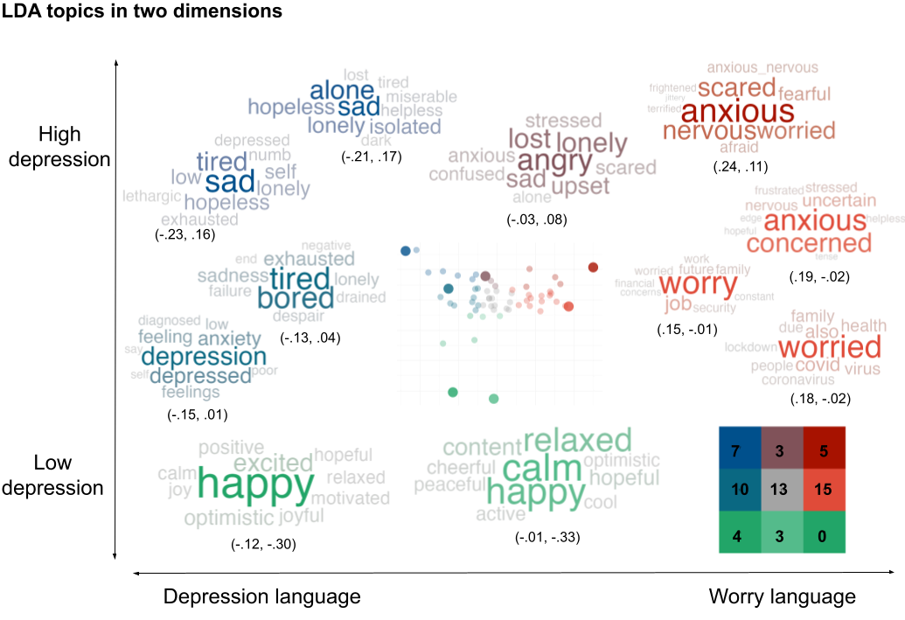

Overview
An R-package for analyzing natural language implementing Differential Language Analysis using words, phrases and topics.
Check out our tutorial paper: Multiple Methods for Visualizing Human Language: A Tutorial for Social and Behavioural Scientists. If you use the topics package, please cite this tutorial in your work.
The topics package is part of the R Language Analysis Suite, including talk, text and topics.
-
talktransforms voice recordings into text, audio features, or embeddings.
-
textprovides many language tasks such as converting digital text into word embeddings.talkandtextoffer access to Large Language Models from Hugging Face.
-
topicsvisualizes language patterns into words, phrases or topics to generate psychological insights.
Thetopicspackage supports thetextpackage in analysing and visualizing topics from BERTtopics.

When using the topics package, please cite:
Ackermann L., Zhuojun G. & Kjell O.N.E. (2024). An R-package for visualizing text in topics. https://github.com/theharmonylab/topics. DOI:zenodo.org/records/11165378.
Differential Language Analysis with Topics and N-grams
The topics pipeline is designed for a seamless transition from raw text to statistically grounded visualizations. It is composed of the following steps:
1. Data Preprocessing Transform raw text into a Document-Term Matrix (DTM) or extract n-grams. This step handles cleaning, including the removal of stopwords and punctuation, to prepare data for modeling or frequency analysis.
2. Model Training For topic modeling, an LDA (Latent Dirichlet Allocation) model is trained on the DTM. Users can specify the number of topics and iterations to optimize the thematic representation of the corpus.
3. Model Inference The model inference step uses the trained LDA model to infer the topic-term distribution across documents, converting qualitative text into quantitative topic loadings.
4. Statistical Analysis Perform Differential Language Analysis (DLA) using topicsTest(). The analysis now supports: * Automatic Detection: Intelligent per-variable method detection (e.g., automatically applying logistic regression for binary factors and linear regression for continuous data). * Multi-Element Analysis: Statistically test both LDA topics and n-grams. * Rigorous Controls: Support for control variables and various p-value adjustment methods for multiple comparisons (e.g., FDR, Bonferroni, Holm).
5. Visualization Generate publication-ready visualizations of your results: * Wordclouds: Create clouds of significant topics where word size reflects the contribution to the theme. * N-gram Plots: Directly visualize the relationship between specific phrases and your variables of interest.

